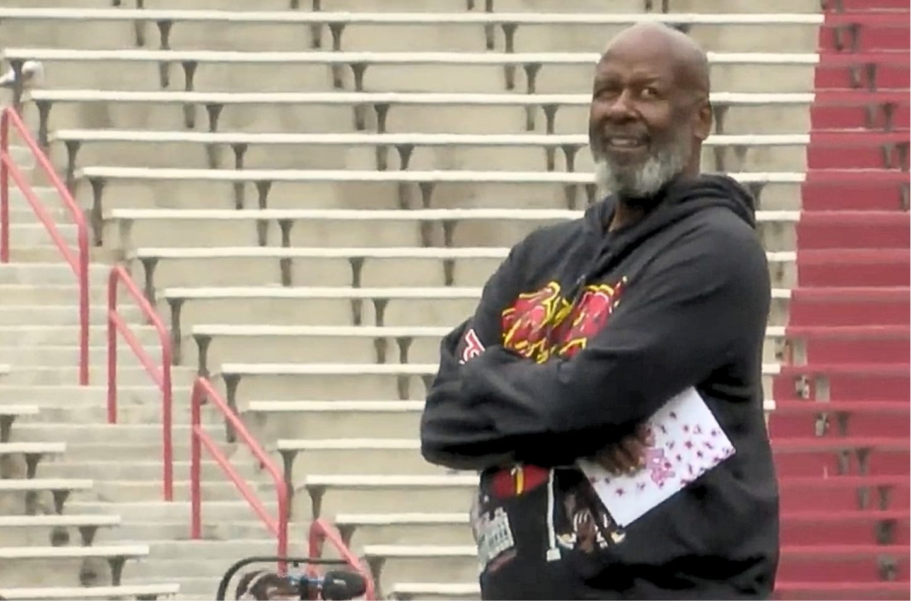
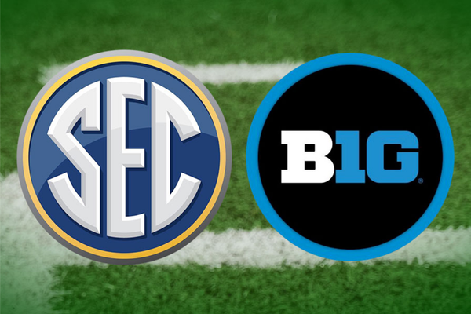

Maryland head coach Michael Locksley looks around at the school's Spring Showcase. Photo by Rachel Lawrence.
For more than a decade, the Southeastern Conference (SEC) was practically synonymous with success in college football. However, over the last three seasons, it was Big Ten Conference teams who took home the coveted trophy. The shift has renewed debate over whether the massive paychecks at the top of the sport really translate into championships.
For most of the College Football Playoff era, the SEC’s investment appeared to pay off.

SEC and Big Ten logos. Via Yellowhammer News.
The SEC built a reputation as the sport’s most dominant conference. According to the National Collegiate Athletics Association (NCAA), teams in the SEC took home six championship trophies in the last 12 official College Football Playoffs.
But success at the top also raised expectations. With coaches earning salaries comparable to professional sports leaders, fans and administrators increasingly expect trophies to follow.
According to USA Today’s college football salary database, top head coaches now regularly earn eight figures annually, with multiple coaches surpassing $10 million per year. Both the SEC and Big Ten have embraced this modern investment into coaches' paychecks. CBS Sports said that nine head coaches are now in the “$10 million club,” illustrating how rapidly the market has grown.
The SEC had the highest-paid coach in the sport in 2024 with Georgia head coach Kirby Smart according to USA Today. Ohio State’s Ryan Day in the Big Ten followed closely, though, earning more than $12 million.
In a recent article by CBS sports though, Indiana’s Curt Cignetti is now the highest-paid in the league, topping out at $13.2 million after winning the national championship.
The trend reflects a common belief that coaching provides a competitive edge in recruiting, player development and playoff positioning, and that paying coaches handsomely encourages them to do so to the best of their ability. High salaries became a symbol of commitment to competing at the highest level.
The recent Big Ten streak has fueled discussion about whether the conference’s growing financial muscle is paying off. According to reports on conference revenue distribution, Big Ten schools now receive more media revenue per school than the SEC, giving them greater financial flexibility.